Crafts Minecraft:The Key to Survival and Creativity |
||
 |
||
The Crafting Process
Crafting in Minecraft revolves around using a Crafting Table that is essential for most of the recipes, however, if you don't have one, you can use the 2x2 crafting grid in your inventory where your workbench can also be crafted.
2x2 Grid:
Used for simple recipes like crafting sticks, planks, or a crafting table.
Crafting Table (3x3 Grid):
Unlocks a wider range of recipes, from armor and tools to complex redstone mechanisms.
Essential Items You Can Craft
Tools and Weapons
- Start with wooden tools and work your way up to diamond or Netherite.
- Craft swords, pickaxes, shovels, and axes for mining and combat.
| 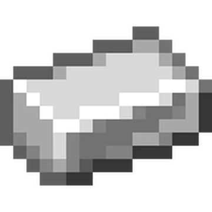 | ||||
| 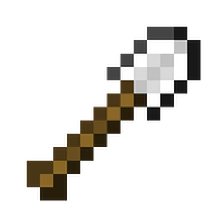 | ||||
Armor
Protect yourself by crafting leather, iron, or diamond armor.
| 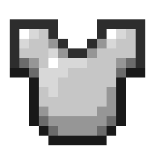 | ||||
Building Materials
Turn raw materials into bricks, stairs, slabs, or decorative blocks..
| 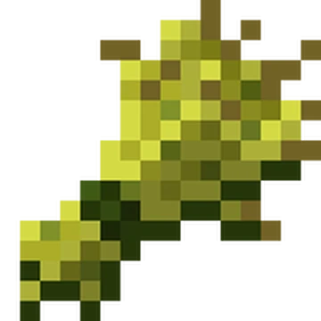 | ||||
| 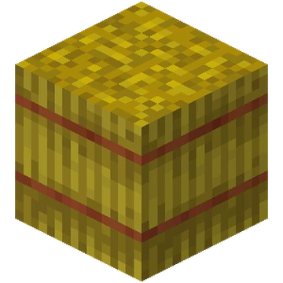 | ||||
Food
Craft bread, cakes, or even stews to restore health and hunger.
Redstone Components
Create levers, pistons, and observers for automated builds.
| 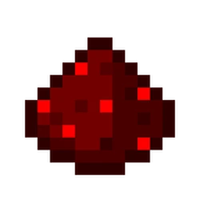 | 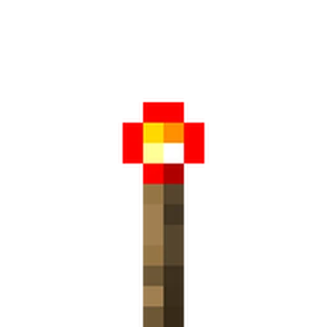 | |||
How Crafting Fuels Your Progress
Exploration
Build compasses, boats, and maps to navigate your world.
Building
Craft decorative blocks and furniture-like items for creative projects.
Experiment
Discover new recipes by combining materials in the grid.
Automation
redstone crafting to design farms, traps, or advanced contraptions.
Brewing
Crafting Powerful Potions
Brewing is an alchemical process that allows you to create potions with various effects—healing, strength, invisibility, and more. It's an essential skill for adventurers preparing for tough battles or exploring dangerous areas.
Set Up Your Brewing Stand:
Craft a Brewing Stand using Blaze Rods and Cobblestone.
Gather Ingredients:
Collect Nether Wart, Blaze Powder, and other resources from the Nether and Overworld.
Start Brewing:
Use a Water Bottle as a base and add ingredients like Nether Wart to create Awkward Potions, which are then enhanced with other items like Ghast Tears or Blaze Powder.
Tips:
- Use Redstone to extend the duration of potions and Glowstone Dust to increase their potency.
- Carry splash or lingering potions for area effects during combat.
Display
| 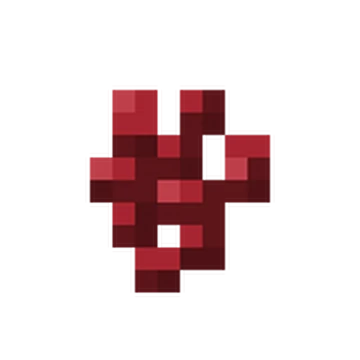 | ||||
| 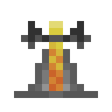 | 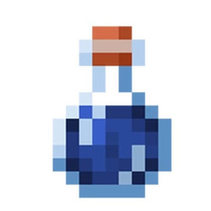 | |||
The order matters
Whenever you brew you have to put the nether warth first and then comes the effect
Spice it up
You can optionally either elongate the effect or power it up. You can also make it castable.
| 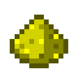 | + |
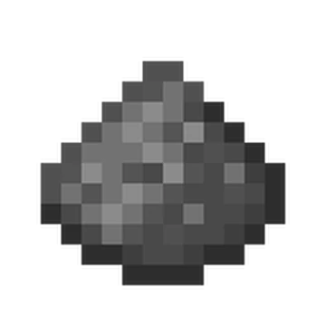 | |||
bon appetit
Use it up to your own good, whether it's for boosting yourself or trolling others